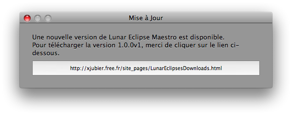
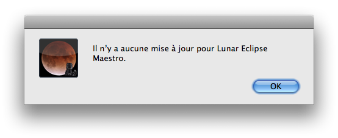

Vérifier les mises à jour
Vous pouvez vérifier si il existe une mise à jour de l’application Lunar Eclipse Maestro.
- Dans le menu Apple sélectionnez Vérifier les mises à jour…
-
Téléchargez la mise à jour en cliquant sur le lien si il y en a une disponible.

Il n’y a pas de mise à jour disponible.

Données personnelles: lors d’une recherche des mises à jour, des informations comme la version de Lunar Eclipse Maestro et du système d’exploitation sont échangées avec le serveur de mises à jour.
Ces données sont seulement utilisées pour effectuer la mise à jour et ne seront en aucun cas fournies à un tiers. Les données sont effacées lorsque la procédure de mise à jour est terminée.